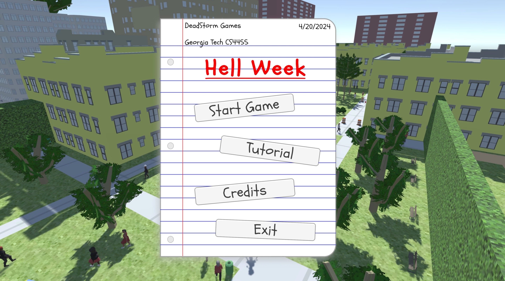
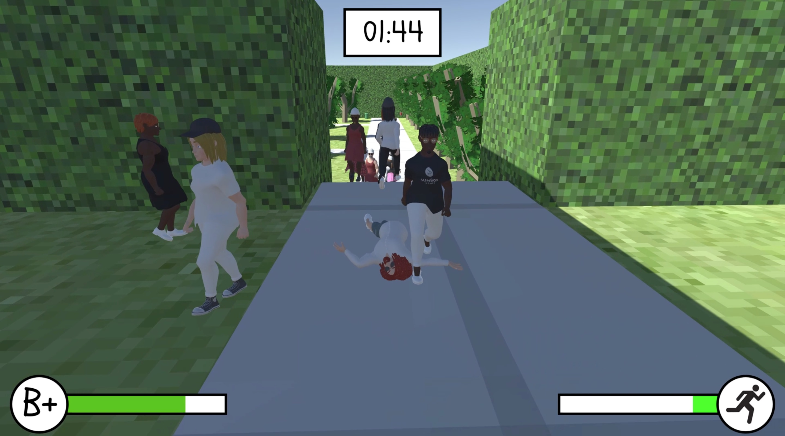
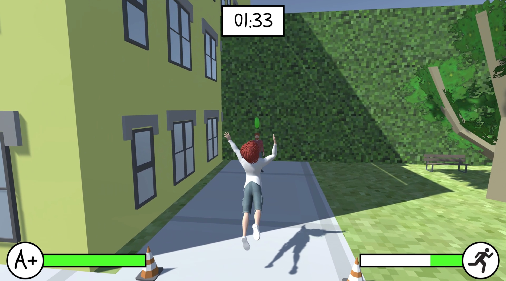

HellWeek
My team and I were tasked with creating a video game in Unity using all the milestones we covered. We came up with HellWeek and we think its pretty fun! Here is how we went about doing that!
Background
The game "HellWeek," developed by DeadStorm Games, is a third-person action game where players navigate a university campus to find a professor and submit homework within a time limit. Using Unity, the development team implemented features such as player motion with ragdoll physics, handled by Edward Storey, and NPC pathfinding managed by Nathan Farmer. The collaborative effort included team members Nathan Farmer, Jimmy Huang, Robert Jeon, Edward Storey, and Abhinav Vinod, who collectively contributed to the engaging gameplay and interactive elements that define the game's core experience.
During the alpha development phase of "HellWeek," the team focused on refining core gameplay mechanics and integrating key interactive elements. This phase was crucial for testing the game's functionality and balance, ensuring that the player's experience was both challenging and enjoyable. Feedback gathered from initial playtests led to adjustments in the NPC behavior and the game's pacing. The team emphasized improving the user interface and enhancing the overall aesthetic of the game environment, aiming to create a more immersive and visually appealing experience for players. This iterative process allowed the developers to address issues promptly and refine gameplay based on real user interactions.
In the final stages of developing "HellWeek," the team conducted extensive playtesting to ensure a polished and engaging final product. This process involved multiple rounds of testing with diverse groups of players, which helped identify a variety of gameplay issues and bugs. Each round of feedback was meticulously analyzed, leading to iterative improvements in gameplay mechanics, user interface, and overall game stability.
The issues identified during these tests, such as balance problems, NPC AI inconsistencies, and interface usability, were systematically addressed. Adjustments were made to optimize player experience, ensuring that the game was not only fun but also met the high standards set by the development team. The playtesting phases were integral in transitioning "HellWeek" from a concept to a fully realized game, showcasing the team's commitment to quality and player satisfaction. The result is a robust game that offers a challenging yet rewarding experience, reflecting the dedication and hard work of the entire development team.
Image Gallery

Start Screen

Ragdolled Character

Leaping towards the Professor!